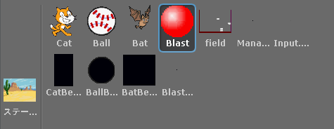

Scratch is developed by the Lifelong Kindergarten Group at the MIT Media Lab. See http://scratch.mit.edu
ゲームオブジェクト
scratch2unity の右下のスプライト欄に表示されているキャラクターは Unity でいう「ゲームオブジェクト」に相当します(図1)。
図1: ゲームオブジェクト

「ステージ」も含めると全部で 12 個のゲームオブジェクトがありますが、その内最初からゲーム実行画面に表示されるゲームオブジェクトは自キャラである「Cat」と「ステージ」と「field」の3つです。
一方「Ball」「Bat」「Blast(爆発)」の3つは最初は表示されておらず、必要に応じてインスタンス化される「プレハブ」に相当します。
残りの「Manager」などは画面上には表示されない裏方役のゲームオブジェクトになります。